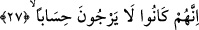

Sa’dî Müftî der ki: Kâfirlerin küfür ve inkârda devam etme gibi bir niyetleri olduğu
için onlara böyle bir cezâ takdir edilmiştir. Zâten biraz sonra gelecek “çünkü onlar
hesaba (çekileceklerini) ummazlardı” (Nebe’, 78/27) âyet-i kerîmesi buna işâret
edecektir ki bu âyetin mânâsı; “onlar bir gün hesaba çekilecekleri beklentisi içinde
olmadan inkârlarına devam ediyorlardı” şeklinde anlaşılmalıdır. İşte onlar inkâra
devam niyetinde oldukları için sonu olmayan bir azab ve cehennemde çağlar üstüne
çağlar boyu kalma cezâsı bu fiile uygun düşmüştür. Yine onlar insanın ruhunu rahatlatan
ve kalbini serinleten “tasdik/doğrulama” fiilini bunun zıttı olan “tekzip/yalanlama” fiili
ile değiştirdiklerinden dolayı kaynar su ve irinle cezâlandırılmışlardır. Buna karşılık
Allah Teâlâ müminlere kendilerini cennetin serinliği ve içeceğiyle rahatlatacak nimetler
verecektir. Su ile ilim arasındaki bu ilişkiden dolayı rüyada su görmek ilim ile tâbir
edilir olmuştur.
Hakikate erenlerden birisi bu âyetleri şöyle anlamaktadır: “Şüphesiz azgınların
barınağı cehennem bir gözetleme yeridir”: Yâni hayvâni tabîat cehenneminde beşerî
güçler -ki bunlar nefs-i emmâre ve heveslerinin peşinden gidenlerin tabîat
cehennemlerinin zebanileridir-, hevâ ve heveslerine dalarak, bid’atlere uyarak, her şeyi
mubah görerek, zındıklık yaparak, Allah’la yaratıklarının bir olduğunu iddiâ ederek,
Allah’ın yarattıklarından bâzılarının vücûduna hulûl ettiğini iddiâ ile kendini
ilgilendirmeyen bâzı meselelere dalarak nefsine zulmedenler için bir gözetleme yeridir.
“Azgınlar orada çağlar boyu kalırlar”. Yâni nefsine zulmeden bu zâlimler beşeriyet
hükmünden çıkarılma, şeriat elbisesini giyme, tarikat ve hakikat hıl’atini giyme vaktine
kadar kalırlar. “Orada bir serinlik ve içilecek bir şey tatmazlar”. Yâni orada beşeriyet
pencerelerine indirilmiş hicabın kaldırılması sûretiyle yakin serinliğini ve mahabbet
şarabını tatmazlar. Çünkü onlar tabîat cehennemleri sebebiyle dünya muhabbetine
dalmışlardır. “Dünyada yaptıklarına uygun karşılık olarak kaynar su ve irin tadarlar”.
Yâni onlar sadece tabîat irinlerinden akan irini tadarlar.
Kâşânî’nin tefsirine göre “sadece kaynar su tadarlar” demek, onlar cehl-i
mürekkeplerinden dolayı kaynar su ve yoldan çıkarıcı şeyleri sevmenin ve ona
meyletmenin karanlığından da irin tadarlar. “Yaptıklarına uygun karşılık olarak” yâni
işledikleri amellerine ve önden gönderdikleri inanç ve ahlaklarına uygun olarak kaynar
su ve irin tadarlar. Bu azab onların amellerinin ve ilimlerinin bozukluğundan dolayıdır.
Onlar sevap umuduyla sâlih bir amel işlememişler ve doğru bir ilim sâhibi de
olmamışlardır ki âyetleri tasdik etsinler.
27. Çünkü onlar hesap gününü (geleceğini) ummazlardı.
Bu cümle, yukarıda zikredilen cezâya neden lâyık olduklarını ifâde etmekte ayrıca